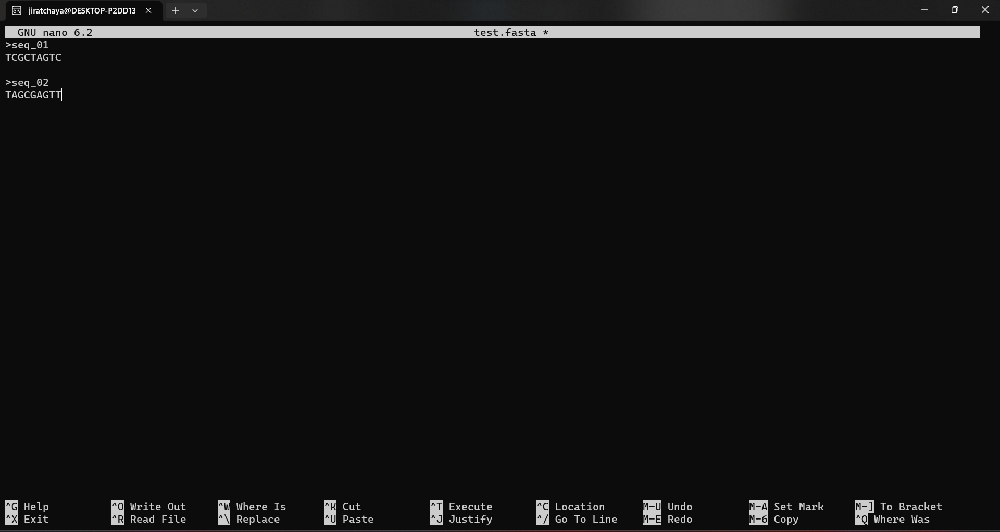

Shell scripts (or shell or UNIX) are widely used in bioinformatics because they’re the interface for large bioinformatics programs. In this workshop, you’ll learn how to use the necessary Bash command concepts. This will allow you to focus on the content of the commands in the following chapters rather than on understanding shell syntax. However, before we start learning bash, it’s good to understand Linux file systems a little bit.
2.1 Linux File Systems
In Unix-like operating systems, the Linux file system defines the directory structure and contents. Even if they’re located on different physical or virtual hard disks, all files and directories are located under the root directory.
It is the root directory of the entire file system hierarchy and the primary hierarchy root. The root directory is where everything begins. This directory can be written only by root.
/bin
Essential commands that must be available with all users, for example, cat, ls, cp, cd, top, mkdir and many more.
/dev
Essential device files such as /dev/null, /dev/shm. This includes terminal devices, USB or other devices connected to the system.
/etc
System-wide configuration files for the host, contain files that all programs need. Also included are startup and shutdown shell scripts for starting and stopping individual programs, such as /etc/fstab for permanently mounting external disks, /etc/netplan for configuring the network and IP address, and more.
/home
Users’ home directories, where they keep their saved files and settings. These directories are used to store all of a user’s files and settings in one place so that they can easily access their data and keep it organized. For example /home/ponsit, /home/jiratchaya, /home/prasert.
/lib
Contain essential libraries for the binaries in /bin/ and /sbin/.
/media
Mount points for removable media such as CD-ROMs (deprecated).
/mnt
Temporary mount directory where sysadmins can mount file systems, such as /mnt/external_disk_1, /mnt/removable_drive_1, etc.
/opt
Optional application software packages, including add-on applications from individual vendors.
/sbin
Essential system binaries, e.g., fsck, init, route.
/tmp
Temporary files that aren’t preserved between reboots and may be severely restricted.
/usr
A secondary hierarchy for read-only user data. Most utilities and applications are located here.
2.2 Basic Bash Commands
Bash is a Unix shell that allows you to enter commands that are then interpreted and executed by the computer. Commands can be used to perform tasks such as creating a directory, running a program, or deleting a file. Bash is a type of interpreter that takes user input and converts it into a language that the computer can understand and execute. Commands usually consist of keywords, arguments, and flags that allow the user to control how the command is interpreted and executed by the computer.
Creating directories
Keeping all your files in a single directory makes things much easier for you and your collaborators, and makes it easier to reproduce. Suppose you’re working on a transcriptome analysis of Cyanophora paradoxa. Your first step would be to choose a short, appropriate project name and create some basic directories.
üóíÔ∏èNote: In Linux file system, directory is exactly the same with folder.
To keep it short and clear, ‘Cpa’ is used as an alias article name for C. paradoxa, and as the name of the directory, followed by words describing your work, for example.
⚠️ warning: Avoid using spaces ( ) or special characters such as slashes ( / ), backslashes ( \ ), accented characters ( ’ ), tilde ( ~ ), and many others. It is recommended to use underscore ( _ ) or hyphen ( - ) instead of these special characters.
Create a directory name ‘Cpa_RNASeq’ from current working directory
mkdir Cpa_RNASeq
This will create a directory named ‘Cpa_RNASeq’ in your current working directory. Let us create some subdirectories!
Create subdirectory ‘01_Rawdata’ under the ‘Cpa_RNASeq’ directory
mkdir Cpa_RNASeq/01_Rawdata
This will create a subdirectory name ‘01_Rawdata’ in the directory ‘Cpa_RNASeq’
Create multiple directory at once
For example, if you want to create 2 directories named ‘02_QC’ and ‘03_adapter_trimming’ under the ‘Cpa_RNASeq’ directory, then simply type
mkdir Cpa_RNASeq/{02_QC,03_adapter_trimming}
Navigating your file system
The file system manages the files and directories of the operating system. It organizes our data into files, which store information, and directories. When you see the prompt below on your terminal’s screen, it means that your terminal has processed the command you entered and is ready for the next command.
jiratchaya@DESKTOP-P2DD13C:~$
jiratchaya is username using this terminal. The address @ symbol followed by DESKTOP-P2DD13C in a computer or server name. And, the dollar sign $ is a prompt, which shows us that the shell is waiting for input. Your shell may use a different character as a prompt and may add information before the prompt.
If you want to find out where we are now, type
pwd
pwd stands for print working directory. Without explicit specification, the computer assumes that we want to execute commands in our current working directory. This can be a user’s home directory (~).
If you want to change the directory, e.g. to the ‘Cpa_RNASeq’ directory we just created, just type the following
cd Cpa_RNASeq
cd stands for “change directory”. You can change our working directory by typing cd followed by a directory name. In this case you change from the current directory to the directory named ‘Cpa_RNASeq’.
Listing directories
We can see what files and subdirectories are in this directory by running ls, which stands for “listing”:
ls
Expected result:
jiratchaya@DESKTOP-P2DD13C:~/Cpa_RNASeq$ ls
01_Rawdata 02_QC 03_adapter_trimming
Let us look at the other way. This way is to list all the files and directories, including the users who own them, the permissions, and the file size in bytes.
ls-l
Expected result:
jiratchaya@DESKTOP-P2DD13C:~/Cpa_RNASeq$ ls -l
total 12
drwxr-xr-x 2 jiratchaya jiratchaya 4096 Mar 1 21:02 01_Rawdata
drwxr-xr-x 2 jiratchaya jiratchaya 4096 Mar 1 21:02 02_QC
drwxr-xr-x 2 jiratchaya jiratchaya 4096 Mar 1 21:02 03_adapter_trimming
List files and folders, permissions and size in a human readable format.
ls-lh
Expected result:
jiratchaya@DESKTOP-P2DD13C:~/Cpa_RNASeq$ ls -l
total 12
drwxr-xr-x 2 jiratchaya jiratchaya 4096 Mar 1 21:02 01_Rawdata
drwxr-xr-x 2 jiratchaya jiratchaya 4096 Mar 1 21:02 02_QC
drwxr-xr-x 2 jiratchaya jiratchaya 4096 Mar 1 21:02 03_adapter_trimming
See all hidden files and directories
ls-la
Expected result:
jiratchaya@DESKTOP-P2DD13C:~/Cpa_RNASeq$ ls -la
total 20
drwxr-xr-x 5 jiratchaya jiratchaya 4096 Mar 1 21:02 .
drwxr-x--- 3 jiratchaya jiratchaya 4096 Mar 1 21:02 ..
drwxr-xr-x 2 jiratchaya jiratchaya 4096 Mar 1 21:02 01_Rawdata
drwxr-xr-x 2 jiratchaya jiratchaya 4096 Mar 1 21:02 02_QC
drwxr-xr-x 2 jiratchaya jiratchaya 4096 Mar 1 21:02 03_adapter_trimming
Files and directories handling
Creating and editing files
When you work on the command line, you often need to create or edit text files. In this workshop, we recommend using nano as a text editor. Other Unix text editors you may have heard of include vi, vim, emacs, vscode, and many more.
We’ll create the file test.fasta. To open an existing file or create a new file, type nano followed by the filename:
nano test.fasta
This will bring up the text editing screen on your terminal. Here you can type anything you want, but in this case we’ll create a sequence like this.
>seq_01
TCGCTAGTC
>seq_02
TAGCGAGTT
üóíÔ∏èNote:Always leave an enter in the last line. This is advantageous if this file is further used by many programmes.

The text editing screen is displayed once you have typed nano into some files. At the bottom of the window is a list of the most important keyboard shortcuts for the nano editor. All commands are preceded by either a ^ or an M character. The caret symbol (^) stands for the Ctrl key. For example, the commands ^J mean that you press the Ctrl and J keys simultaneously. The letter M stands for the Alt key.
To edit a file, you can use the navigation keys such as arrow keys, End, Home, PgUp or PgDn to control the cursor.
To save the changes you made to the file, press Ctrl+o. If the file doesn’t exist yet, it’ll be created after saving.
To exit nano, press Ctrl+x. If there are unsaved changes, you’ll be asked if you want to save the changes. Nano will ask you ‘Save modified buffer?’, then type y to confirm the edit.
Copying files and directories
To copy files and directories the command cp can be used. cp stands for copy and is used to copy files and directories in Linux. An example: You copy the file test.fasta to 01_Rawdata with the following syntax
cp [source file] [target_directory]/
For example
cp test.fasta 01_Rawdata/
Copy file to another file, using the syntax
cp [source_file] [new_file_name]
For example
cp test.fasta test_2.fasta
You can copy a file to a new file in the directory by using the following syntax
To copying directory, use additional flag as follow
cp -r [source_directory] [new_directory_name]
The flag -r stands for recursive, i.e. all files and subdirectories in this directory are copied repeatedly. For example, 01_Rawdata already contains test.fasta, which we copied before, and we want to duplicate this directory.
cp-r 01_Rawdata/ 01_Rawdata_new
Moving files and directories
To copy files and directories, the command mv can be used. mv stands for move and is used to move files and directories in Linux. For example, move the file test_2.fasta to the directory 01_Rawdata_new with the following syntax
mv [file_to_move] [target_directory]
mv test_2.fasta 01_Rawdata_new/
Specifically, to move files and directories, no flags are required as with cp. So if we want to move 01_Rawdata_new to a subdirectory of 01_Rawdata, this can be done as follows
mv [source_file_or_dir] [target_file_or_dir]
mv 01_Rawdata_new/ 01_Rawdata
Moving file within the directory up to the current directory
mv [source_dir]/[source_file] .
The dot ( . ) stands for the current directory, which means you want to move something to the current directory. For example, we want to move the file another_test.fasta, which is in the directory 01_Rawdata, to the current directory by typing
mv 01_Rawdata/another_test.fasta .
Deleting files and directories
Removing files and directories can be done with the command rm. rm stands for remove and is used to delete files and directories in Linux. It’s simple and straightforward with the following syntax.
rm [file_to_delete]
For example, you are deleting file another_test.fasta
rm another_test.fasta
To delete directories, use additional flags
rm -rf [directory_to_delete]
The flag -r means that it does something recursive, which means that it deletes all files and subdirectories of the directory you want to delete. The flag f can help us delete some protected files and directories that you should think twice before deleting.
For example you want to delete 03_adapter_trimming directory
rm-rf 03_adapter_trimming
Or delete subdirectory 01_Rawdata_new by
rm-rf 01_Rawdata/01_Rawdata_new
Don’t worry~ the 01_Rawdata is still with us
jiratchaya@DESKTOP-P2DD13C:~/Cpa_RNASeq$ ls -l
total 20
drwxr-xr-x 2 jiratchaya jiratchaya 4096 Mar 1 22:33 01_Rawdata
drwxr-xr-x 2 jiratchaya jiratchaya 4096 Mar 1 21:59 02_QC
-rw-r--r-- 1 jiratchaya jiratchaya 38 Mar 1 22:00 another_test.fasta
-rw-r--r-- 1 jiratchaya jiratchaya 38 Mar 1 21:59 test.fasta
-rw-r--r-- 1 jiratchaya jiratchaya 38 Mar 1 22:00 test_2.fasta
üö® Danger zone: Be sure to check the path of the location where you want to delete something with the command rm -rf, otherwise you‚Äôll unintentionally delete necessary files or directories.
Downloading file from URL
There are numerous ways to download a file from a URL via the command line on Linux, and two of the best tools for this task are wget and curl. Both tools have their advantages and disadvantages, depending on the download task at hand. However, in this workshop we’ll mainly focus on downloading with curl.
For example, we want to download the latest (draft) genome assembly report of Cyanophora paradoxa from the NCBI genome database via curl as follows.
jiratchaya@DESKTOP-P2DD13C:~/Cpa_RNASeq$ curl -O https://ftp.ncbi.nlm.nih.gov/genomes/all/GCA/004/431/415/GCA_004431415.1_ASM443141v1/GCA_004431415.1_ASM443141v1_assembly_report.txt
% Total % Received % Xferd Average Speed Time Time Time Current
Dload Upload Total Spent Left Speed
100 61357 100 61357 0 0 21604 0 0:00:02 0:00:02 --:--:-- 21604
jiratchaya@DESKTOP-P2DD13C:~/Cpa_RNASeq$ ls -l
total 80
drwxr-xr-x 2 jiratchaya jiratchaya 4096 Mar 1 22:33 01_Rawdata
drwxr-xr-x 2 jiratchaya jiratchaya 4096 Mar 1 21:59 02_QC
-rw-r--r-- 1 jiratchaya jiratchaya 61357 Mar 1 22:56 GCA_004431415.1_ASM443141v1_assembly_report.txt
-rw-r--r-- 1 jiratchaya jiratchaya 38 Mar 1 22:00 another_test.fasta
-rw-r--r-- 1 jiratchaya jiratchaya 38 Mar 1 21:59 test.fasta
-rw-r--r-- 1 jiratchaya jiratchaya 38 Mar 1 22:00 test_2.fasta
Tips: The alternative way to retrieve genome information from NCBI, you can just go to NCBI Genome Data Hub and specify species name to get information. NCBI provides several routes to download files including curl!
A genome assembly of C. paradoxa in NCBI genome data hub (Accessed: 1 March 2023)
Inspecting file
We’ll inspect the assembly report file GCA_004431415.1_ASM443141v1_assembly_report.txt that we just downloaded from NCBI
Now you will see the number of lines that fit on your screen, and you can scroll up and down with the arrow keys. Then press q when you have checked your file.
less GCA_004431415.1_ASM443141v1_assembly_report.txt
Example of inspecting a file with the less command. Users can scroll up and down with the arrow keys and exit by pressing q.
Print top 10 lines of file
head GCA_004431415.1_ASM443141v1_assembly_report.txt
The first 10 lines of C. paradoxa assembly report file
Extracted lines with a specific word “Chloroplast” in assembly report file.
Show latest commands we used
You can simply press arrow keys up or down to see your latest commands that you typed in the terminal.
Another way to see the latest command by typing below in the terminal
history
History is able to keep track of the command lines you use, associate any data with each line, and use information from previous lines when writing new lines.
Shortcut: Tab Completion
When typing file or directory names, it’s easy to mistype. Instead, we can use ‘tab’ to complete what we want to type. The shell will try to fill in the rest of a directory or file name if you press tab after typing.
Using tab autocomplete in bash.
2.3 Maintaining Long-Running Jobs with tmux
When we run programs through the Unix shell, they run until they terminate successfully or are terminated with an error. Multiple processes running simultaneously on your computer, such as system files, web browser, email application, bioinformatics programs, and so on. In bioinformatics, we often work with processes that run for a long period of time. Therefore, it’s important that we know how to work with processes and manage them using the Unix shell. In this section, we’ll learn the basics of dealing with processes.
In addition, processes are also terminated if the connection to the servers is interrupted, the network connection drops immediately, or the power fails. Since we’re constantly working with remote computers in our daily work in bioinformatics, we need a way to prevent the accidental termination of long-running applications. Leaving the local terminal’s connection to a remote computer open while a program is running is an unsafe solution, even the most reliable networks can experience short outages.
How tmux increase you pruductivity :/
Some software offers the user the possibility to run their work as a background process, e.g. Nohup, Screen and Tmux. In this workshop, we propose Terminal Multiplexer (Tmux), which allows you to create a session with multiple windows, each of which can run its own processes. The Tmux sessions are persistent, which means that all the windows and their processes can be easily restored by reattaching the session.
When Tmux is running on a remote machine, you can maintain a persistent session that isn’t lost when the connection drops or you close your terminal window to go home (or even exit your terminal programme). Rather, all Tmux sessions can be reattached to the terminal you’re currently at - simply log back into the remote machine via SSH and reattach the Tmux session. All windows remain undisturbed and all processes continue to run.
A simple usage of Tmux
Open a terminal and use the following command
tmux
You see a command prompt as usual, but you now see a taskbar-style menu at the bottom of the terminal that contains something like bash 0 *. The asterisk indicates that this is your active window.
Tmux windows
Detach a session
This allows you to leave the tmux session, but it continues to run in the background. Just press the key
This should take you back to a standard prompt. Remember that the Tmux session continues in the background, and you can recall it at any time.
Name the Tmux session
You may find it helpful to name your sessions with meaningful titles to keep things organized. Let’s try naming your first session with Tmux.
You can name it anything that we want, but in this case I will name it ‘process2’. Enter the following command:
tmux new -s process2
You should now have a new Tmux session running. If you look in the lower left area of the window, you will see the name of your session rather than the generic ‘bash’.
List tmux sessions
What happened to your session? It is still running in the background. You can reopen the session by name or number ID, but what if you forgot the session name?
There is a list function built into tmux:
tmux ls
This lists all your current tmux sessions. When you run it, you get output like this:
List of running tmux sessions.
Reenter (aka reattach) a session in Tmux
To reopen your tmux session, you can use the tmux command with the attach or attach-session option as follows:
tmux a -t [session_name]
For example, we’ll reenter to the process2 session.
tmux a -t process2
Exit tmux when finish running
Quitting tmux is exactly the same as quitting the standard terminal by pressing the keys Ctrl+d or by entering